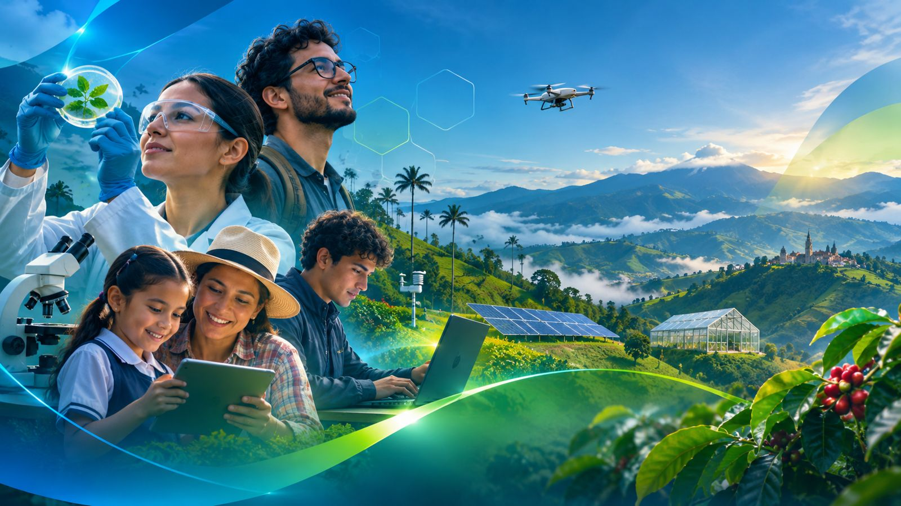
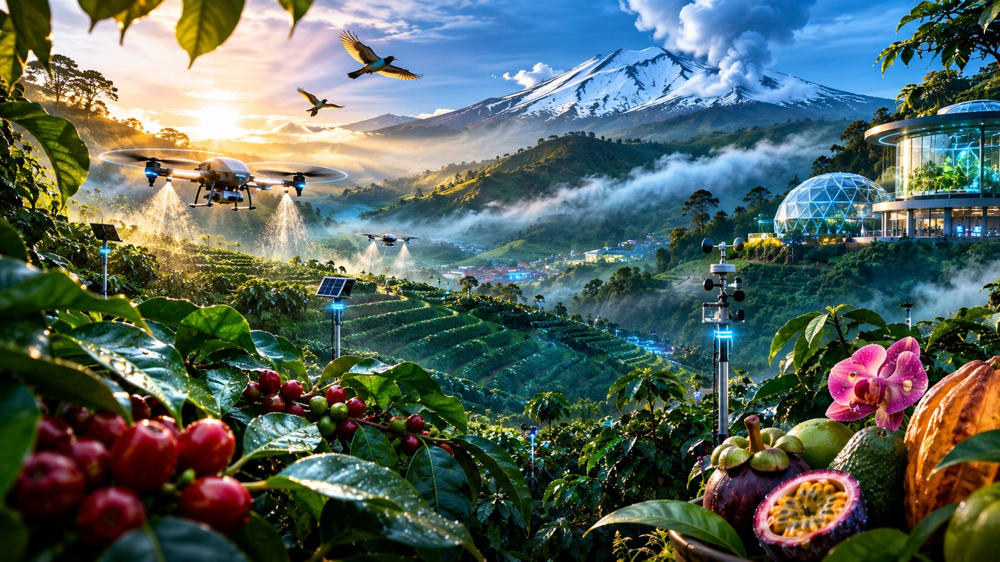

Política Pública Departamental · Ordenanza 952 de 2023
Política Pública Departamental · Ordenanza 952 de 2023
La Ciencia, la Tecnología y la Innovación al servicio de Caldas
¿Qué es el Plan de Acción, cuál es el diagnóstico actual y para qué lo estamos actualizando? Una hoja de ruta viva para conectar el talento científico con las necesidades reales de los 27 municipios y las 6 subregiones.
El Mandato de la Misión de Sabios
La Ordenanza 952 de 2023 trazó un camino claro: la ciencia y la educación deben ser los motores de la equidad y la productividad en Caldas.
¿Qué es el Plan de Acción de CTeI de Caldas?
La herramienta para pasar del papel a los proyectos y a la vida de la gente
El Plan de Acción es la brújula que define cómo el departamento de Caldas invierte sus recursos, articula sus universidades y moviliza sus empresas para resolver los grandes desafíos del territorio.
Nació de la Misión de Sabios por Caldas (37 comisionados de todos los sectores) y fue formalizado mediante la Ordenanza 952 de abril de 2023 de la Asamblea Departamental. No es un documento estático: es un instrumento de gestión que debe actualizarse periódicamente (Art. 7) para responder a la realidad cambiante del departamento.
"Ajustar líneas de acción, metas e indicadores orientados a fortalecer la capacidad productiva, la resiliencia territorial, la cohesión social y la sostenibilidad ambiental de Caldas, a partir de la generación, transferencia y apropiación de conocimiento científico y tecnológico."
- 1 Planes de Gestión (Art. 7): Al menos tres planes durante la vigencia, articulados al Plan de Desarrollo Departamental y construidos de la mano con el CODECTI.
- 2 Gobernanza Territorial (Art. 10): El CODECTI lidera el sistema y el Parque Tecnológico dinamiza la articulación academia-empresa.
- 3 Seguimiento Semestral (Art. 11): Mínimo dos sesiones anuales de evaluación en el CODECTI y rendición de cuentas a la Asamblea.
- 4 Regla de Oro de Financiación (Art. 12): Todo proyecto financiado con regalías del SGR debe demostrar a cuál de las líneas del Plan de Acción aporta.
¿Cuál es el Diagnóstico hasta el Momento?
Lo que tenemos en Caldas y los cuatro grandes nudos que reveló la evaluación
Caldas es reconocido a nivel nacional por sus capacidades: universidades con acreditación de alta calidad, tradición cafetera y una biodiversidad excepcional. Sin embargo, la evaluación del trienio demostró que el conocimiento se quedó encerrado y los recursos no llegaron a proyectos viables.
El problema de Caldas no es la falta de talento científico ni la falta de recursos: es la falta de conexión. El conocimiento no llega a la empresa, Manizales no se articula con la periferia y los recursos de regalías no se logran viabilizar por falta de proyectos formulados en MGA.
¿Para qué se Hace? Cuatro Resultados Territoriales
El Plan de Acción se actualiza para lograr transformaciones medibles en estos cuatro ejes
No estamos redactando un documento teórico: estamos construyendo una hoja de ruta donde cada línea de acción, cada meta a 2027, 2030 y 2033, y cada proyecto financiado tiene que demostrar su impacto real en al menos uno de estos cuatro resultados territoriales:
La Ruta de Construcción del Plan de Acción
Cinco fases de trabajo técnico, evidencia territorial y concertación con el CODECTI
Para garantizar que el nuevo Plan de Acción no repita los errores del pasado, la construcción avanza en cinco etapas secuenciales, desde el diagnóstico de lo que hay hasta la entrega de un tablero público de seguimiento:

Tu Voz Construye la Hoja de Ruta
Consulta abierta a integrantes del CODECTI y a todos los actores del ecosistema de Caldas
Para que el Plan de Acción funcione, debe responder a lo que tú y tu organización conocen, necesitan y pueden aportar.
Diseñamos una consulta guiada para que los investigadores, empresarios, docentes, funcionarios y líderes de Caldas nos digan qué líneas priorizar, qué metas trazarnos para cada subregión, qué proyectos deben financiarse y qué compromisos institucionales podemos asumir.
¿Qué le preguntamos a tu organización?
- 1. Líneas: Cuáles mantener, reformular, fusionar o crear.
- 2. Metas: Qué resultados medibles fijar para tu subregión.
- 3. Proyectos: Qué ideas o iniciativas postular a fuentes de financiación.
- 4. Gobernanza: Quién debe liderar y qué rol asume tu institución.
- 5. Seguimiento: Qué indicadores puedes aportar y cómo rendir cuentas.
De la Misión de Sabios a la Realidad Territorial
Detalle de la Ordenanza 952 de 2023, la estructura de las 14 líneas de acción originales, el balance de ejecución y las nueve recomendaciones estratégicas para Caldas.
La Política Pública
Ordenanza 952 de abril de 2023 · Asamblea Departamental de Caldas
Consolidar la equidad, la competitividad y la sostenibilidad del departamento de Caldas a partir del conocimiento, la educación, la tecnología y la innovación.
Objetivos Específicos (Art. 5)- a Posicionar a Caldas como territorio biointeligente y sostenible.
- b Implementar un modelo productivo soportado en la economía circular.
- c Reducir brechas territoriales y sociales mediante educación y conectividad.
| Nodo 1 | Bioeconomía y economía creativa |
| Nodo 2 | Agua, cuencas y cambio climático |
| Nodo 3 | Nuevos modelos productivos y sostenibles |
| Nodo 4 | Conocimiento e innovación para la equidad |
| Nodo 5 | Educar con calidad para el desarrollo humano |
Las 14 Líneas de Acción Originales
Cómo se distribuían las misiones y los 43 productos previstos en 2023

La Secretaría de Desarrollo, Empleo e Innovación concentraba 28 de los 43 productos previstos. El nuevo plan propone delegar la coordinación de líneas en Entidades Ancla con capacidad técnica instalada.
Nueve Recomendaciones Estratégicas
Propuestas técnicas para superar los cuellos de botella y movilizar la inversión
| N.º | Recomendación Estratégica | Eje Temático | Pregunta Asociada en la Consulta |
|---|
Ninguna meta sin fuente identificada, instrumento habilitado y responsable institucional.
Por eso la actualización del Plan de Acción consulta con qué fuentes financiar, qué actores lideran y cómo rendiremos cuentas ante la ciudadanía y la Asamblea Departamental.
Tu aporte técnico construye la hoja de ruta
Siete pasos guiados. Tu avance se guarda automáticamente en este navegador. Solo los campos con * son obligatorios.
Consenso del Ecosistema de CTeI
Síntesis en tiempo real de las respuestas recibidas. Se presentan de forma agregada, sin identificar organizaciones ni personas, conforme a la Ley 1581 de 2012.